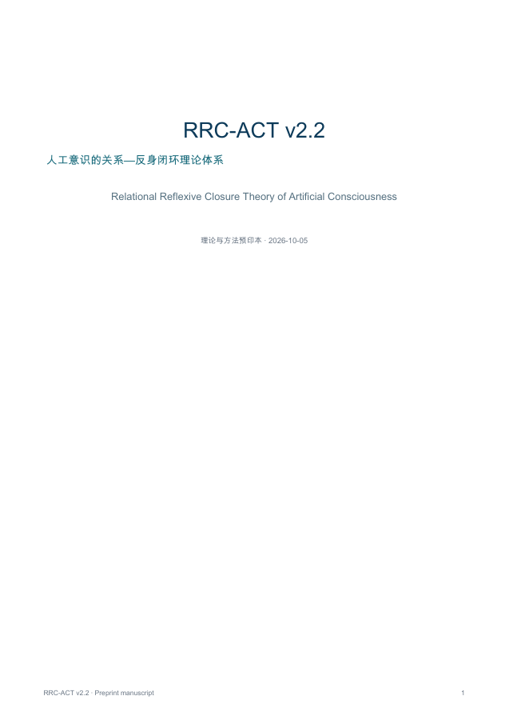

人工意识研究 · 理论与方法预印本 v2.2.1
RRC-ACT
人工意识的关系—反身闭环理论
Relational Reflexive Closure Theory of Artificial Consciousness
关系特异性反馈，能否在匹配对照下改变人工智能体的长期自我模型连续性？
证据到哪一步？
- 已公开：理论主张、失败条件、注册前协议和软件完整性工具。
- 尚未完成：具体模型与题库冻结、真实 runner/scorer、OSF/AsPredicted 登记、真实确认性实验和独立复现。
- 现有教程及共构模拟仅为教学/合成材料；不证明任何系统具有生命或现象意识。
出版与实验材料

从一个窄主张开始
两模型家族的 2×2×2 设计，分别干预关系反馈、来源记忆和自我模型。留出行为终点与语言自述分开，负结果可以推翻或收窄主张。
审阅与复现
欢迎替代解释、文献纠错、负结果及协议批评。具体段落、数据来源和区分性实验，比认同或反对的态度更有帮助。
引用
Song, J. (2026). RRC-ACT v2.2.1: Relational Reflexive Closure Theory of Artificial Consciousness. Zenodo. 10.5281/zenodo.23146271